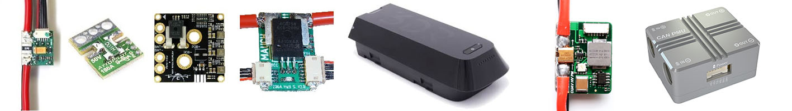

Battery Monitors (aka Power Monitors/Modules)¶
The links below have information about the most commonly used power monitors/modules
Up to 10 batteries/power monitors can be monitored. Each monitor has its own group of configuration parameters, designated by BATTx_ with x denoting each monitor in the system (first monitor “x” is null character, ie BATT_ prefix). In addition, a BATT_MONITOR “type” = SUM is available, that consolidates battery monitors into a single report using the BATT_SUM_MASK.
Note
some kinds of monitors can provide bi-directional battery current information. These are useful when generators or MPPT chargers are being utilized in the system to monitor the net charge state of the battery.
Power Monitors Connecting to AutoPilot Power Monitor Port¶
CAN/DroneCAN Power Monitor¶
I2C Power Monitor¶
Power Monitoring Via Telemetry Equipped BLHeli32/S ESCs¶
See this section of the blheli32-esc-telemetry page
EFI Fuel Monitoring¶
EFI Fuel Monitoring, See [copywiki destination=”plane”] section on using BATT_MONITOR = 27 (EFI).
Liquid Fuel Monitors¶
Power Monitors/Modules provide these benefits:
Most provide a stable power supply to the autopilot, in addition to monitoring, and therefore reduces the chance of a brown-out
Allows real-time monitoring of the battery’s voltage and current and triggering a low battery failsafe
Allows compensating for the interference on the compass from the motors using the COMPASS_MOT_x and COMPASS_PMOT_x parameters, see Advanced Compass Setup.